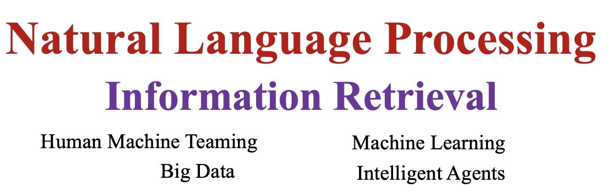

Welcome to my personal homepage
My name is Shubhra Kanti Karmaker (“Santu”). I am a Tenure-Track Assistant Professor in the department of Computer Science and Software Engineering at Auburn University, Alabama. My primary research interest lies at the intersection of Big Data, Artificial Intelligence, and Natural Language Processing. Before joining Auburn University, I was a Postdoctoral Research Associate in the Laboratory for Information and Decision Systems at Massachusetts Institute of Technology (MIT), hosted by Dr. Kalyan Veeramachaneni. Prior to joining MIT, I completed my Ph.D. in computer science from the University of Illinois Urbana Champaign (UIUC) under the supervision of Prof. ChengXiang Zhai. During my Ph.D., I also worked as a research intern at Microsoft Research (Summer 2017 and 2018), Yahoo Research (Summer 2016), and @WalmartLabs (Summer 2015).

| Research Interests | Spotlight! |
|  |
1. Champion in "Food for Thought" first and second interim NLP challenge hosted by Coleridge Initiative in collaboration with USDA. News 2. I am not hiring MS students, if you are interested in Ph.D., directly apply to the program and then send me an email. |
News and Announcements
- [August 2022] Champion in “Food for Thought” second interim NLP challenge hosted by Coleridge Initiative in collaboration with US Department of Agriculture. News
- [October 2022] Paper accepted at ACM Transactions on Intelligent Systems and Technology.
- [October 2022] Paper accepted at IEEE BigData 2022.
- [September 2022] Two Papers accepted at EMNLP 2022.
- [September 2022] Awarded Short-Term Innovative Research (STIR) Grant as PI. Sponsor: Army Research Office (ARO).
- [September 2022] Two Papers accepted at AACL/IJCNLP 2022.
- [September 2022] Paper accepted at COLING 2022.
- [August 2022] We have become the Champion in “Food for Thought” first interim NLP challenge hosted by Coleridge Initiative in collaboration with US Department of Agriculture. News
- [March 2022] Paper accepted at ACL 2022.
- [October 2021] I am serving as an action editor for ACL rolling reviews (ARR)!
- [February 2022] Survey paper accepted at ACM Computing Surveys!
- [October 2020] Best Poster Nomination at CIKM 2020 !!!
- [September 2020] Awarded Seed Grant as PI. Sponsor: Arizona State University.
- [January 2020] Joined Auburn University.